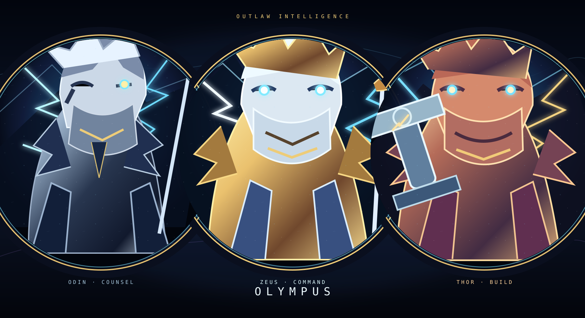

Zeus
Commander and primary operator. Conversation, planning, and sanitized status reads. Dylan remains the final human authority.
Olympus is our Apple Silicon avatar command build: AIRI renders the presence, Hermes provides the authority, and Zeus, Odin, and Thor keep decision, counsel, and implementation separate.

Each avatar has a distinct identity, voice reference, Hermes profile reference, and allowlisted capability set. AIRI never becomes the tool authority.
Commander and primary operator. Conversation, planning, and sanitized status reads. Dylan remains the final human authority.
Independent architecture counsel and red-team reviewer. Analysis and challenge without mutation authority.
Bounded implementation and verification. Build requests stay worktree-scoped and approval-gated.
Olympus rejects arbitrary shell, filesystem, browser, computer-use, hardware, subprocess, credential, and unbounded tool requests. Handoffs are structured, explicit, and human-approval gated.
Do not start by wiring a voice button to a giant agent. Prove each layer on an arm64 Mac, then connect it to the next.